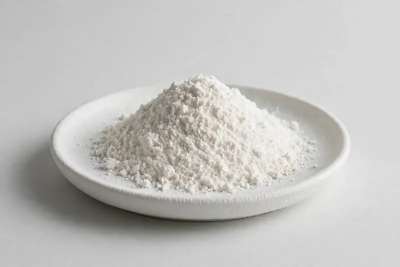

Kojic acid powder, commonly requested at 99% grade for cosmetic formulations positioned around skin brightening.

Overview
Kojic acid powder is a cosmetic active widely used in formulations positioned around skin brightening and tone-evening concepts, with buyers most often requesting a 99% grade. It is typically used at low inclusion levels in creams, serums and masks, making purity and color stability central purchasing criteria. As a trading company in Xi'an we source through partner producers; grade and analytical detail are confirmed once your target specification is received.
Specifications below reflect commonly requested options in the market — not a stock list. Share your target spec and we'll confirm exactly what we can supply, honestly.
| Specification | Details |
|---|---|
| Botanical identity | Kojic acid powder, 99% grade, cosmetic-grade |
| Marker compound | Commonly requested spec grades: 99% assay by HPLC; actual specs confirmed on inquiry |
| Appearance | Fine powder, color typical of the extract |
| Mesh size | Typically 80–100 mesh (confirm per inquiry) |
| Testing | COA/TDS arranged on request; scope agreed per your spec |
Applications
Documentation
We don't claim in-house labs or certifications we don't hold. COA and TDS documents can be arranged on request, and testing scope is agreed against your specification before supply.
FAQ
Related products
Sodium hyaluronate (fermentation-derived)
Key marker: Cosmetic & food grades
View specs →Hydrolyzed collagen (bovine/marine)
Key marker: Type I & III, bovine/marine
View specs →Huperzine A (Huperzia serrata)
Key marker: 1% / 98%+ grades
View specs →zinc picolinate
Key marker: Zinc Content
View specs →alpha-arbutin (4-hydroxyphenyl-alpha-D-glucopyranoside)
Key marker: Alpha-Arbutin 99%
View specs →Send your target spec and volumes — we'll respond with a tailored quotation.
Request a Quote